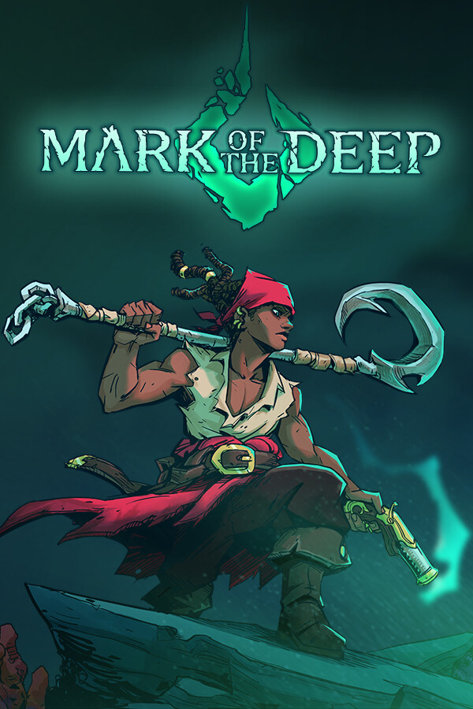

Mark of the Deep
Mark of the Deep
Details
 |
|
| Playtime | Not Played |
| Last Activity | Never |
| Added | 4/18/2026 10:07:54 |
| Modified | 4/18/2026 10:08:11 |
| Completion Status | #Want to Play |
| Library | Playnite |
| Source | Wanderer |
| Platform | PC (Windows) |
| Release Date | 1/24/2025 |
| Community Score | 72 |
| Critic Score | 81 |
| User Score | |
| Genre | Action Adventure Indie |
| Developer | Mad Mimic |
| Publisher | Light Up Games |
| Feature | Achievements Cloud Saves Family Sharing Full Controller Support Single Player |
| Links | Community Hub Discussions Guides News Store Page PCGamingWiki Achievements |
| Tag | Action Action Roguelike Action-Adventure Adventure Atmospheric Combat Controller Dark Fantasy Exploration Fantasy Isometric Metroidvania Multiple Endings Narrative Pirates Roguelike Singleplayer Souls-like Story Rich Stylized |
Description

Mark of the Deep is an epic pirate adventure with a strong narrative and a thrilling mix of elements from acclaimed Metroidvania and Souls-Like games. Embark on this journey as the pirate Rookie, explore the mysteries of a cursed island and find your missing pirate crew!
EMBARK ON THIS EPIC PIRATE ADVENTURE!
A pirate ship wrecked on a mystic island, till then known only by myths n’ tales. Play as Marcus “Rookie” Ramsey and explore the eerie areas of this island surrounded by a mysterious curse in search of your missing crew: the Angry Mermaids!
DEFEAT CURSED CREATURES TO SURVIVE!
In this diversely hostile environment, you need to face a wide variety of dangers to find your lost crewmates, including abyssal monsters, undead creatures and menacing cultists. Fight against over 80 enemies and 16 bosses in challenging battles inspired by souls-like games!

UNLEASH THE POWER OF YOUR MARKS!
As a newfound Mark Keeper, Rookie can unlock new abilities that change how you fight enemies and explore the environments! Discover new skills, weapons and trinkets to upgrade your combat abilities and make your way through new areas of the island.
GATHER YOUR CREWMATES!
Meet a fully-voiced cast of pirates, abyssal creatures and many other characters trapped in the cursed island with you! Rescue old friends and make new allies as you unravel the mysteries of the native inhabitants of the island: the Old Folks.
CHOOSE YOUR OWN PATH!
The abyssal corruption affects everyone around you, including your cherished allies. You have the choice to help those in need by completing their quests and dealing with hard choices along the way. Discover multiple endings in your goal to escape the island!

JOIN OUR CREW!
From the developers of Dandy Ace and No Heroes Here, join the Mad Mimic Discord Server to meet the Mark of the Deep community and share your experience with the game!